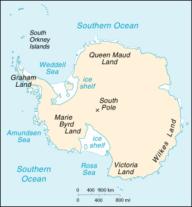

|
Antarctica | |
| Introduction Geography People Government Economy Communications Transportation Military Transnational Issues | ||
|  | ||
| Antarctica | Introduction | Top of Page |
| Background: | Speculation over the existence of a "southern land" was not confirmed until the early 1820s when British and American commercial operators and British and Russian national expeditions began exploring the Peninsula region and areas south of the Antarctic Circle. Not until 1838 was it established that Antarctica was indeed a continent and not just a group of islands. Various "firsts" were achieved in the early 20th century, including: 1902, first balloon flight (by British explorer Robert Falcon SCOTT); 1912, first to the South Pole (five Norwegian explorers under Roald AMUNDSEN); 1928, first fixed-wing aircraft flight (by Australian adventurer/explorer Sir Hubert WILKINS); 1929, first flight over the South Pole (by Americans Richard BYRD and Bernt BALCHEN); and 1935, first transantarctic flight (American Lincoln ELLSWORTH). Following World War II, there was an upsurge in scientific research on the continent. A number of countries have set up year-round research stations on Antarctica. Seven have made territorial claims, but no other country recognizes these claims. In order to form a legal framework for the activities of nations on the continent, an Antarctic Treaty was negotiated that neither denies nor gives recognition to existing territorial claims; signed in 1959, it entered into force in 1961. |
| Antarctica | Geography | Top of Page |
| Location: | continent mostly south of the Antarctic Circle |
| Geographic coordinates: | 90 00 S, 0 00 E |
| Map references: | Antarctic Region |
| Area: |
total:
14 million sq km
land: 14 million sq km (280,000 sq km ice-free, 13.72 million sq km ice-covered) (est.) note: fifth-largest continent, following Asia, Africa, North America, and South America, but larger than Australia and the subcontinent of Europe |
| Area - comparative: | slightly less than 1.5 times the size of the US |
| Land boundaries: |
0 km
note: see entry on International disputes |
| Coastline: | 17,968 km |
| Maritime claims: | none; twenty of 27 Antarctic consultative nations have made no claims to Antarctic territory (although Russia and the US have reserved the right to do so) and do not recognize the claims of the other nations; also see the Disputes - international entry |
| Climate: | severe low temperatures vary with latitude, elevation, and distance from the ocean; East Antarctica is colder than West Antarctica because of its higher elevation; Antarctic Peninsula has the most moderate climate; higher temperatures occur in January along the coast and average slightly below freezing |
| Terrain: | about 98% thick continental ice sheet and 2% barren rock, with average elevations between 2,000 and 4,000 meters; mountain ranges up to 5,140 meters; ice-free coastal areas include parts of southern Victoria Land, Wilkes Land, the Antarctic Peninsula area, and parts of Ross Island on McMurdo Sound; glaciers form ice shelves along about half of the coastline, and floating ice shelves constitute 11% of the area of the continent |
| Elevation extremes: |
lowest point:
Bentley Subglacial Trench -2,540 m
highest point: Vinson Massif 5,140 m note: the lowest known land point in Antarctica is hidden in the Bentley Subglacial Trench; at its surface is the deepest ice yet discovered and the world's lowest elevation not under sea water |
| Natural resources: | iron ore, chromium, copper, gold, nickel, platinum and other minerals, and coal and hydrocarbons have been found in small uncommercial quantities; none presently exploited; krill, finfish, and crab have been taken by commercial fisheries |
| Land use: |
arable land:
0%
permanent crops: 0% permanent pastures: 0% forests and woodland: 0% other: 100% (ice 98%, barren rock 2%) |
| Irrigated land: | 0 sq km (1993) |
| Natural hazards: | katabatic (gravity-driven) winds blow coastward from the high interior; frequent blizzards form near the foot of the plateau; cyclonic storms form over the ocean and move clockwise along the coast; volcanism on Deception Island and isolated areas of West Antarctica; other seismic activity rare and weak; large icebergs may calve from ice shelf |
| Environment - current issues: | in 1998, NASA satellite data showed that the antarctic ozone hole was the largest on record, covering 27 million square kilometers; researchers in 1997 found that increased ultraviolet light coming through the hole damages the DNA of icefish, an antarctic fish lacking hemoglobin; ozone depletion earlier was shown to harm one-celled antarctic marine plants |
| Geography - note: | the coldest, windiest, highest (on average), and driest continent; during summer, more solar radiation reaches the surface at the South Pole than is received at the Equator in an equivalent period; mostly uninhabitable |
| Antarctica | People | Top of Page |
| Population: |
no indigenous inhabitants, but there are seasonally staffed research stations
note: approximately 29 nations, all signatory to the Antarctic Treaty, send personnel to perform seasonal (summer) and year-round research on the continent and in its surrounding oceans; the population of persons doing and supporting science on the continent and its nearby islands south of 60 degrees south latitude (the region covered by the Antarctic Treaty) varies from approximately 4,000 in summer to 1,000 in winter; in addition, approximately 1,000 personnel including ship's crew and scientists doing onboard research are present in the waters of the treaty region; Summer (January) population - 3,687 total; Argentina 302, Australia 201, Belgium 13, Brazil 80, Bulgaria 16, Chile 352, China 70, Finland 11, France 100, Germany 51, India 60, Italy 106, Japan 136, South Korea 14, Netherlands 10, NZ 60, Norway 40, Peru 28, Poland 70, Russia 254, South Africa 80, Spain 43, Sweden 20, UK 192, US 1,378 (1998-99); Winter (July) population - 964 total; Argentina 165, Australia 75, Brazil 12, Chile 129, China 33, France 33, Germany 9, India 25, Japan 40, South Korea 14, NZ 10, Poland 20, Russia 102, South Africa 10, UK 39, US 248 (1998-99); year-round stations - 42 total; Argentina 6, Australia 4, Brazil 1, Chile 4, China 2, Finland 1, France 1, Germany 1, India 1, Italy 1, Japan 1, South Korea 1, NZ 1, Norway 1, Poland 1, Russia 6, South Africa 1, Spain 1, Ukraine 1, UK 2, US 3, Uruguay 1 (1998-99); Summer-only stations - 32 total; Argentina 3, Australia 4, Bulgaria 1, Chile 7, Germany 1, India 1, Japan 3, NZ 1, Peru 1, Russia 3, Sweden 2, UK 5 (1998-99); in addition, during the austral summer some nations have numerous occupied locations such as tent camps, summer-long temporary facilities, and mobile traverses in support of research (July 2001 est.) |
| Antarctica | Government | Top of Page |
| Country name: |
conventional long form:
none
conventional short form: Antarctica |
| Government type: | Antarctic Treaty Summary - the Antarctic Treaty, signed on 1 December 1959 and entered into force on 23 June 1961, establishes the legal framework for the management of Antarctica. The 23rd Antarctic Treaty Consultative Meeting was held in Peru in May 1999. At the end of 2000, there were 44 treaty member nations: 27 consultative and 17 non-consultative. Consultative (voting) members include the seven nations that claim portions of Antarctica as national territory (some claims overlap) and 20 nonclaimant nations. The US and Russia have reserved the right to make claims. The US does not recognize the claims of others. Antarctica is administered through meetings of the consultative member nations. Decisions from these meetings are carried out by these member nations (within their areas) in accordance with their own national laws. The year in parentheses indicates when an acceding nation was voted to full consultative (voting) status, while no date indicates the country was an original 1959 treaty signatory. Claimant nations are - Argentina, Australia, Chile, France, New Zealand, Norway, and the UK. Nonclaimant consultative nations are - Belgium, Brazil (1983), Bulgaria (1998) China (1985), Ecuador (1990), Finland (1989), Germany (1981), India (1983), Italy (1987), Japan, South Korea (1989), Netherlands (1990), Peru (1989), Poland (1977), Russia, South Africa, Spain (1988), Sweden (1988), Uruguay (1985), and the US. Non-consultative (nonvoting) members, with year of accession in parentheses, are - Austria (1987), Canada (1988), Colombia (1989), Cuba (1984), Czech Republic (1993), Denmark (1965), Greece (1987), Guatemala (1991), Hungary (1984), North Korea (1987), Papua New Guinea (1981), Romania (1971), Slovakia (1993), Switzerland (1990), Turkey (1995), Ukraine (1992), and Venezuela (1999). Article 1 - area to be used for peaceful purposes only; military activity, such as weapons testing, is prohibited, but military personnel and equipment may be used for scientific research or any other peaceful purpose; Article 2 - freedom of scientific investigation and cooperation shall continue; Article 3 - free exchange of information and personnel, cooperation with the UN and other international agencies; Article 4 - does not recognize, dispute, or establish territorial claims and no new claims shall be asserted while the treaty is in force; Article 5 - prohibits nuclear explosions or disposal of radioactive wastes; Article 6 - includes under the treaty all land and ice shelves south of 60 degrees 00 minutes south and reserves high seas rights; Article 7 - treaty-state observers have free access, including aerial observation, to any area and may inspect all stations, installations, and equipment; advance notice of all expeditions and of the introduction of military personnel must be given; Article 8 - allows for jurisdiction over observers and scientists by their own states; Article 9 - frequent consultative meetings take place among member nations; Article 10 - treaty states will discourage activities by any country in Antarctica that are contrary to the treaty; Article 11 - disputes to be settled peacefully by the parties concerned or, ultimately, by the ICJ; Articles 12, 13, 14 - deal with upholding, interpreting, and amending the treaty among involved nations. Other agreements - some 200 recommendations adopted at treaty consultative meetings and ratified by governments include - Agreed Measures for Fauna and Flora (1964) which were later incorporated into the Environmental Protocol; Convention for the Conservation of Antarctic Seals (1972); Convention on the Conservation of Antarctic Marine Living Resources (1980); a mineral resources agreement was signed in 1988 but remains unratified; the Protocol on Environmental Protection to the Antarctic Treaty was signed 4 October 1991 and entered into force 14 January 1998; this agreement provides for the protection of the Antarctic environment through five specific annexes: 1) marine pollution, 2) fauna and flora, 3) environmental impact assessments, 4) waste management, and 5) protected area management; it prohibits all activities relating to mineral resources except scientific research. |
| Legal system: | Antarctica is administered through meetings of the consultative member nations. Decisions from these meetings are carried out by these member nations (within their areas) in accordance with their own national laws. US law, including certain criminal offenses by or against US nationals, such as murder, may apply extra-territorially. Some US laws directly apply to Antarctica. For example, the Antarctic Conservation Act, 16 U.S.C. section 2401 et seq., provides civil and criminal penalties for the following activities, unless authorized by regulation of statute: the taking of native mammals or birds; the introduction of nonindigenous plants and animals; entry into specially protected areas; the discharge or disposal of pollutants; and the importation into the US of certain items from Antarctica. Violation of the Antarctic Conservation Act carries penalties of up to $10,000 in fines and one year in prison. The National Science Foundation and Department of Justice share enforcement responsibilities. Public Law 95-541, the US Antarctic Conservation Act of 1978, as amended in 1996, requires expeditions from the US to Antarctica to notify, in advance, the Office of Oceans and Polar Affairs, Room 5801, Department of State, Washington, DC 20520, which reports such plans to other nations as required by the Antarctic Treaty. For more information, contact Permit Office, Office of Polar Programs, National Science Foundation, Arlington, Virginia 22230; telephone: (703) 292-8030, or see their website at www.nsf.gov. |
| Antarctica | Economy | Top of Page |
| Economy - overview: | Fishing off the coast and tourism, both based abroad, account for the limited economic activity. Antarctic fisheries in 1998-99 (1 July-30 June) reported landing 119,898 metric tons. Unregulated fishing landed five to six times more than the regulated fishery, and allegedly illegal fishing in antarctic waters in 1998 resulted in the seizure (by France and Australia) of at least eight fishing ships. Companies interested in commercial fishing activities in Antarctica have put forward proposals. The Convention on the Conservation of Antarctic Marine Living Resources determines the recommended catch limits for marine species. A total of 13,193 tourists visited in the 1999-2000 summer, up from the 10,013 who visited the previous year. Nearly all of them were passengers on 24 commercial (nongovernmental) ships and several yachts that made 143 trips during the summer. Most tourist trips lasted approximately two weeks. |
| Antarctica | Communications | Top of Page |
| Telephones - main lines in use: |
0
note: information for US bases only (2001) |
| Telephones - mobile cellular: | NA |
| Telephone system: |
general assessment:
NA
domestic: NA international: NA |
| Radio broadcast stations: |
AM NA, FM 2, shortwave 1
note: information for US bases only (1998) |
| Radios: | NA |
| Television broadcast stations: |
1 (the US Navy Antarctic Support Group operates a cable system with six channels for the American Forces Antarctic Network-McMurdo)
note: information for US bases only (2000) |
| Televisions: |
several hundred at McMurdo Sound
note: information for US bases only (2001) |
| Internet country code: | .aq |
| Internet Service Providers (ISPs): | NA |
| Antarctica | Transportation | Top of Page |
| Ports and harbors: | there are no developed ports and harbors in Antarctica; most coastal stations have offshore anchorages, and supplies are transferred from ship to shore by small boats, barges, and helicopters; a few stations have a basic wharf facility US coastal stations include McMurdo (77 51 S, 166 40 E), Palmer (64 43 S, 64 03 W); government use only except by permit (see Permit Office under "Legal System"); offshore anchorage is sparse and intermittent |
| Airports: |
19
note: 27 stations, operated by 16 national governments party to the Antarctic Treaty, have aircraft landing facilities for either helicopters and/or fixed-wing aircraft; commercial enterprises operate two additional aircraft landing facilities; helicopter pads are available at 27 stations; runways at 15 locations are gravel, sea-ice, blue-ice, or compacted snow suitable for landing wheeled, fixed-wing aircraft; of these, 1 is greater than 3 km in length, 6 are between 2 km and 3 km in length, 3 are between 1 km and 2 km in length, 3 are less than 1 km in length, and 2 are of unknown length; snow surface skiways, limited to use by ski-equipped, fixed-wing aircraft, are available at another 15 locations; of these, 4 are greater than 3 km in length, 3 are between 2 km and 3 km in length, 2 are between 1 km and 2 km in length, 2 are less than 1 km in length, and 4 are of unknown length; aircraft landing facilities generally subject to severe restrictions and limitations resulting from extreme seasonal and geographic conditions; aircraft landing facilities do not meet ICAO standards; advance approval from the respective governmental or nongovernmental operating organization required for landing (2001 est.) |
| Airports - with unpaved runways: |
total:
19
over 3,047 m: 6 2,438 to 3,047 m: 3 1,524 to 2,437 m: 1 914 to 1,523 m: 4 under 914 m: 5 (2000 est.) |
| Heliports: | 27 stations have helicopter landing facilities (helipads) (2001 est.) |
| Antarctica | Military | Top of Page |
| Military - note: | the Antarctic Treaty prohibits any measures of a military nature, such as the establishment of military bases and fortifications, the carrying out of military maneuvers, or the testing of any type of weapon; it permits the use of military personnel or equipment for scientific research or for any other peaceful purposes |
| Antarctica | Transnational Issues | Top of Page |
| Disputes - international: | Antarctic Treaty freezes claims (see Antarctic Treaty Summary in Government type entry); sections (some overlapping) claimed by Argentina, Australia, Chile, France, New Zealand, Norway, and UK; the US and most other nations do not recognize the territorial claims of other nations and have made no claims themselves (the US and Russia reserve the right to do so); no claims have been made in the sector between 90 degrees west and 150 degrees west |
{kind=link}